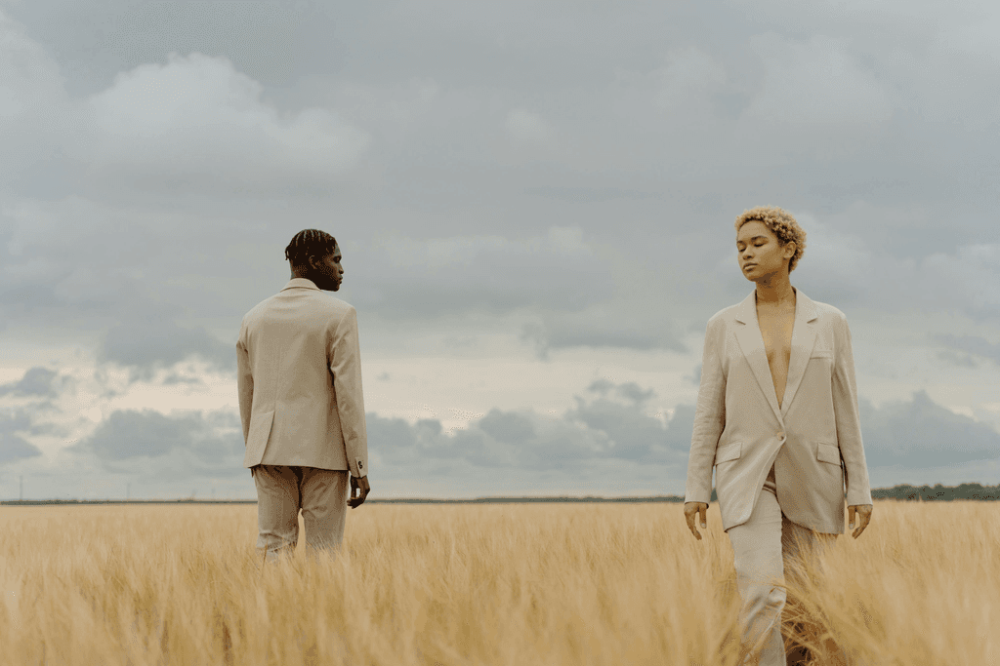
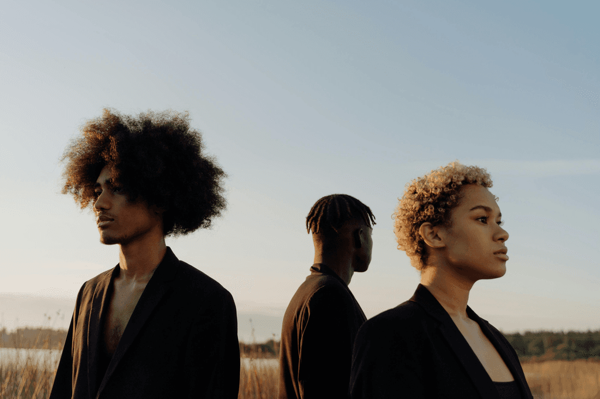

Champ Silencieux
Paintings series capturing the timeless essence of the Sonoran Desert through its shifting landscapes. This project explores the subtle relationship between light, iconic geological formations, and the plant life that defines this unique ecosystem. Through a soft and contemplative palette, the series invites reflection on the silent beauty and resilience of these arid lands.



Next project
 Lisière
Lisière